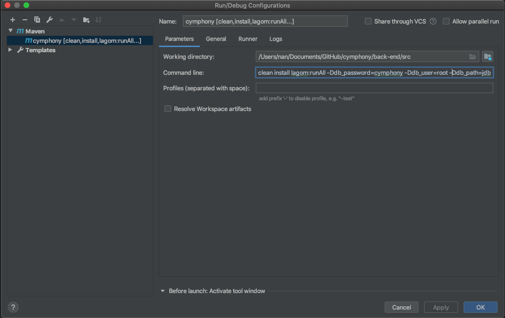
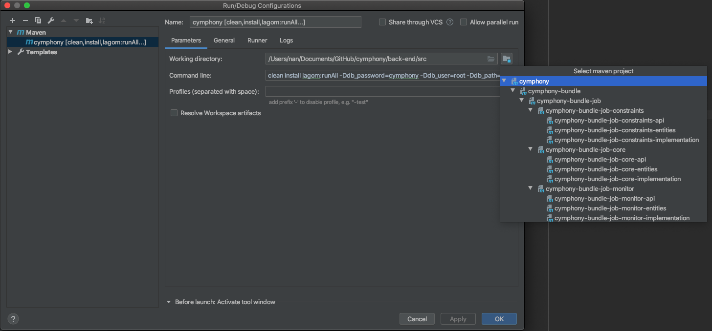

Run from IDE (IntelliJ)¶
For developers who want to modify the code of Cymphony, we highly recomment to use IntelliJ. Below is how to import and config Cymphony using IntelliJ.
Create a new project from the downloaded
cymphonyfolder.
Set up the project name and location.
Select Unmark All, and then create a cymphony project.
Select File -> Project Structure …
Under Project SDK:, select 11(java version “11.0.2”).
Click Modules under Project Settings, and then click Import Module
Select the folder
back-end/srcfrom the downloaded cymphony folder
Select Maven, under Import module from external model, and then click Finish
Click Add Configuration… and select Maven. Under Command line:, put ‘clean install lagom:runAll -Ddb_password=${DB_PASSWORD} -Ddb_user=${DB_USER} -Ddb_path=jdbc:mysql://${DB_ADDRESS}:${DB_PORT}/cymphony?useSSL=false&createDatabaseIfNotExist=true -Ddb_path_public=jdbc:mysql://${DB_ADDRESS}:${DB_PORT}/template?useSSL=false&createDatabaseIfNotExist=true’, and for Working directory put cymphony/back-end/src
Please refer to developers(back)-runcommand for setting the above parameters.
 If you already started redis and mysql, you should be able to run cymphony from IntelliJ.